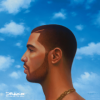

Drake
- In My Feelings
- God's Plan
- Hotline Bling
- I'm Upset
- Yes Indeed
- These and Other Things
- This is Drake's first album, it was released in 2006. Popular songs include From the Morning, Michigan, and Kenneth.
- Take Care
- This is Drake's second album, it was released in 2010. Popular songs include Over my Dead Body, Shot for Me, and Headlines.
- Nothing Was the Same
- This is Drake's third album, it was released in 2013. Popular songs include Tuscan Leather, Furthest Thing, and Started From the Bottom

- Views
- This is Drake's fourth Album, it was released in 2016. Popular songs include Hype, Too Good, and Views
- Scorpion
- This is Drake's Fifth Album, it was released in 2018. Popular songs include Nonstop, In My Feelings, and Don't Matter.